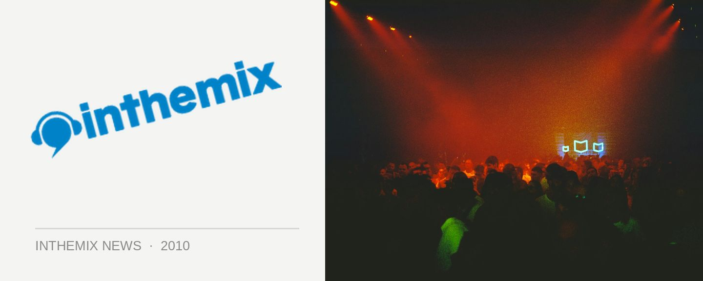

inthemix's most wanted tours of 2010!
It’s that time of year where we fondly dream of what could be… there’s endless possibilities when it comes to the kickass acts could make it down before the end of the year, and there’s boundless potential for losing it like a loon on the dancefloor. We’ve got a fair bit of fun to go between now and the end of Future Music Festival, but after that we’ve got the rest of the year ahead of us. Have you had a ponder on who you’d love to take a visit? Let’s take a look at ITM’s most wanted tours of 2010!
Some names like Eric Prydz and Royksopp we’ve still never seen before, and we’re hanging out for their Oz debut. Acts like Chemical Brothers and Daft Punk we’ve seen, but dammit we’d love to experience them again. And a visit from some of the more underground choices like Redshape or Tritonal would swell the hearts of many a serious music fan. We’ve got all the bases covered!
If last year’s Most Wanted hitlist is anything to go by, it’ll be a fair indication of who we’ll see visiting the country this year, as more than half of the list paid us a visit before 2009 was done and dusted. So let’s take a look at what could be…
ITM most wanted tours in 2010